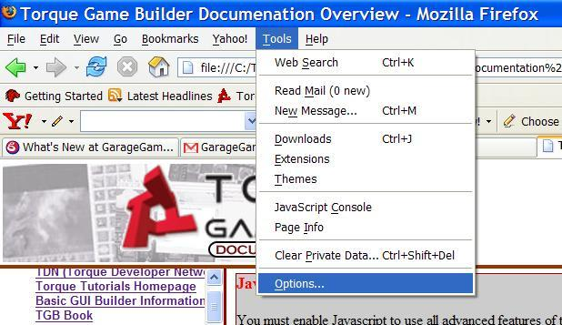
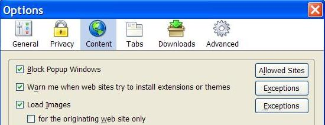
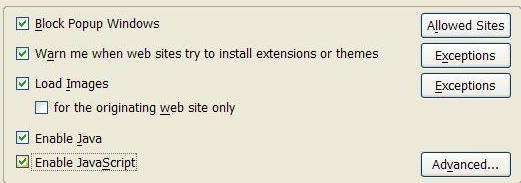

Click the "Tools" drop down menu and select "Options":

Now select the "Content" Icon:

Now click the "Enable Javascript" checkbox and then click "OK":

Now all you have to do is refresh the page.